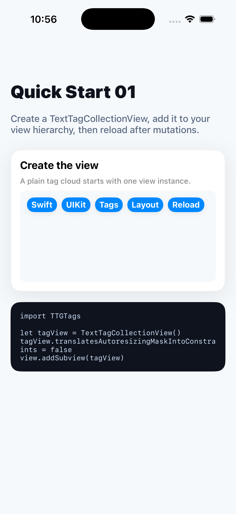

Quick Start 01
Create the tag view
Start with a single TextTagCollectionView. Add it to your view hierarchy like any other UIKit view.
import TTGTags
let tagView = TextTagCollectionView()
tagView.translatesAutoresizingMaskIntoConstraints = false
view.addSubview(tagView)
NSLayoutConstraint.activate([
tagView.leadingAnchor.constraint(equalTo: view.leadingAnchor, constant: 16),
tagView.trailingAnchor.constraint(equalTo: view.trailingAnchor, constant: -16),
tagView.topAnchor.constraint(equalTo: view.safeAreaLayoutGuide.topAnchor, constant: 24)
])